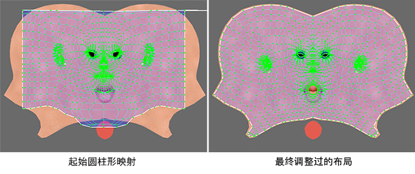

映射 UV
映射 UV 是指为网格指定 UV 的实际过程。通常情况下，可以通过将 UV 从一个或多个基本体对象（例如，平面、圆柱体或球体）投影到近似于网格轮廓的网格曲面开始该过程。例如：
将
平面映射
投影到平坦的街道或建筑面上。
将
圆柱形贴图
投影到头部或躯干周围。
将
轮廓拉伸贴图
投影到凹凸不平的丘陵地形上。
创建初始贴图之后，您将使用
“UV 编辑器”(UV Editor)
中的工具调整 UV，以更好地适配实际网格。

本节内容
平面 UV 映射
圆柱形 UV 映射
球形 UV 映射
自动 UV 映射
最佳平面 UV 映射
轮廓拉伸 UV 映射
用户定义的 UV 映射
确认 UV 放置
映射光照贴图 UV
在网格之间传递 UV
父主题：
UV